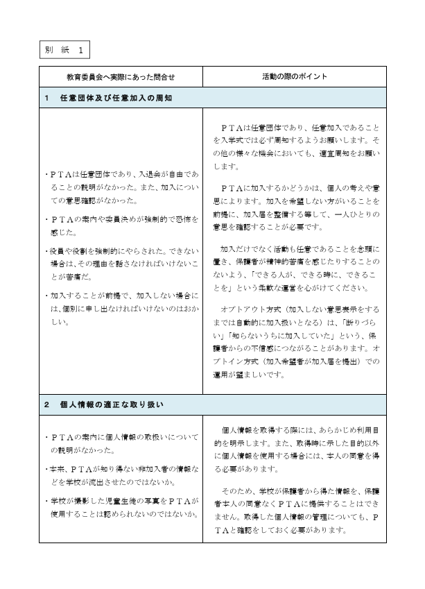
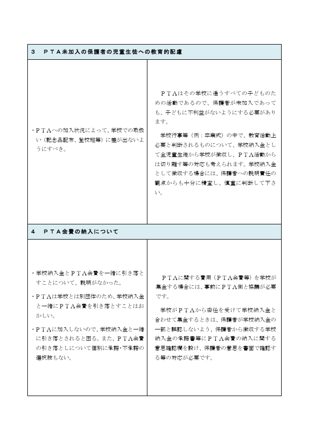
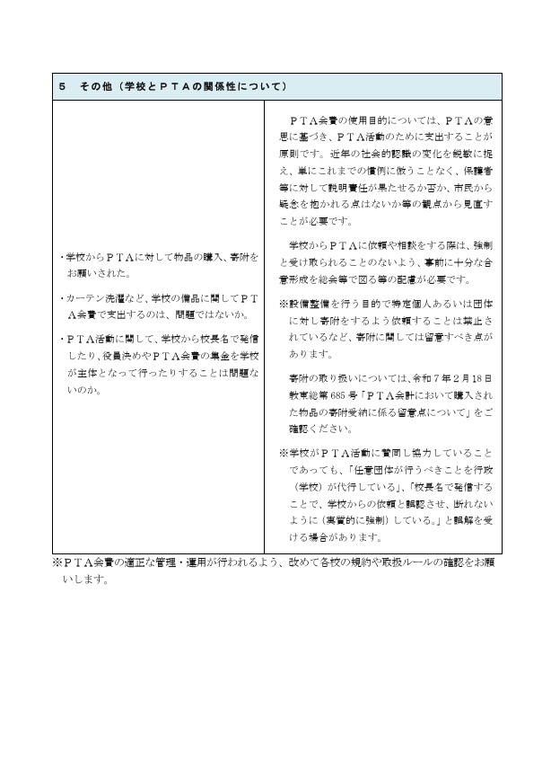
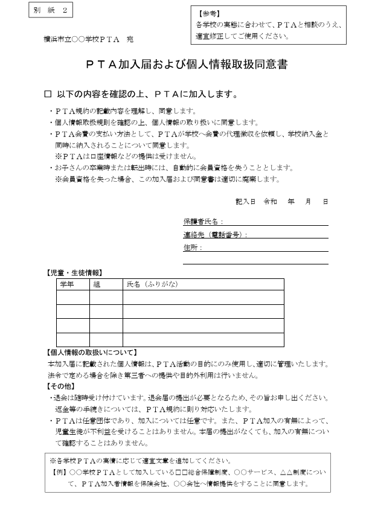

加入は本人意思の確認が必要
別紙では、PTAは任意団体・任意加入であることを周知し、加入届を整備して一人ひとりの意思を確認する方向が示されています。
PTA適正化推進委員会
このページは、横浜市教育委員会が発出したとされる「PTA運営の留意点について（通知）」を、教育委員会・学校・PTAが確認しやすい形に整理したものです。
このページは、公開用の中心資料として扱うため、資料の性格を分けて表示します。
| 確認済みとして扱う範囲 | このサイトに掲載された別紙画像4点の画像内容、Google Sites掲載ページに記載された通知名・通知番号・要点整理。 |
|---|---|
| 原本未照合として扱う範囲 | Adobe Acrobat側PDF本文の全文、発出公文書全体、別紙画像とPDF原本の完全一致。 |
| 公開時の注意 | PDF本文の原本確認が完了するまでは、「横浜市通知の内容を整理したページ」ではなく、「掲載資料・提供画像に基づく整理」と明示する。 |
別紙では、PTAは任意団体・任意加入であることを周知し、加入届を整備して一人ひとりの意思を確認する方向が示されています。
PTA活動で利用する情報は、利用目的を明示し、学校が保有する情報を当然にPTAへ提供する扱いを避ける必要があります。
卒業式等の学校行事で、PTA加入状況により児童生徒に差が出ないよう、学校納入金等で整理する視点が示されています。
PTA会費を学校が徴収する場合でも、PTA側との協議、保護者への説明、意思確認が必要であることを前提に整理します。
| 通知名 | PTA運営の留意点について（通知） |
|---|---|
| 通知番号 | 学教第1965号 |
| 発出日 | 令和7年12月1日 |
| 宛先 | 学校長、校長代理 |
| 発出元 | 横浜市教育委員会事務局 学校支援・地域連携課長 |
| 担当 | 教育委員会事務局学校支援・地域連携課 地域連携係 PTA担当 |
| 位置づけ | PTAが任意団体であること、入会意思確認、個人情報、会費徴収、学校との境界を確認するための自治体通知資料。 |
提供された画像を、横浜市教育委員会通知に付属する別紙資料として掲載しています。画像は確認用資料として扱い、公開前にはPDF原本との照合が必要です。




掲載元ページでは、通知本文として、PTAは社会教育法に定める社会教育関係団体であり、公の支配に属さない団体であること、保護者と教職員が協力して子どもたちの健やかな成長を支え合うことを目的に、その趣旨に賛同する保護者と教職員によって運営される任意の団体であることが示されています。
また、PTAへの入会にあたっては本人への意思確認が必要であり、強制されるものではないこと、加入方法や活動内容が世の中の動向等を踏まえたものとなっているか十分に検討し、場合によっては見直すことが求められていることが示されています。
教育委員会が学校長・校長代理に対し、PTAの任意性と加入方法・活動内容の再確認を求めている点に実務上の意義があります。単なるPTA内部の話ではなく、学校がPTAと連携する際に、学校側が確認すべき事項として扱われている点が重要です。
自動加入やオプトアウト方式ではなく、加入届によって本人の入会意思を確認する方向で整理すべき事項です。
本人同意なき学校名簿の流用や、学校からPTAへの情報提供を当然視しないことが確認事項になります。
PTA加入状況により、児童生徒に差別的取扱いや不利益が生じないよう確認する必要があります。
学校徴収金とPTA会費を分離し、PTA会費については個別に承諾を得る設計が求められます。
学校がPTAを代行している、または加入を事実上強制していると誤認される関与を抑制する必要があります。
この通知は、PTAの任意性を単なる理念として確認するだけでなく、加入方法、個人情報、会費徴収、子どもへの配慮、学校との境界という実務領域に落とし込んでいる点が重要です。
教育委員会・学校が確認すべき中心は、PTAそのものを管理することではなく、学校がPTA加入・会費・情報提供・連絡手段・服務に関与している部分について、学校運営上の根拠と説明責任を整理することです。
学校関与、通知、一斉調査、服務整理の観点から確認する入口です。
横浜市教育委員会通知を、法令・一次資料ページの自治体通知欄にも掲載しています。
資料室から横浜市教育委員会通知への導線を置いています。